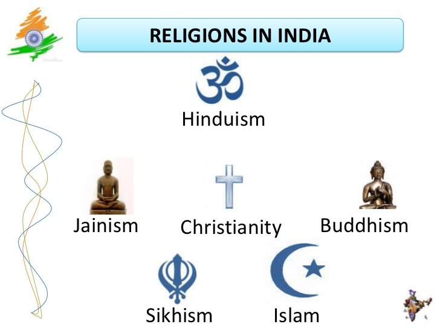

The culture of India refers collectively to the thousands of distinct and unique cultures of all religions and communities present in India. India's languages, religions, dance, music, architecture, food and customs differ from place to place within the country. Indian culture, often labeled as an amalgamation of several cultures, spans across the Indian subcontinent and has been influenced by a history that is several millennia old. Many elements of India's diverse cultures, such as Indian religions, philosophy, cuisine, languages, martial arts, dance, music and movies have a profound impact across the Indosphere, Greater India and the world.Indian-origin religions Hinduism, Jainism, Buddhism, and Sikhism, all of which are based on the concept of dharma and karma. Ahimsa, a philosophy of nonviolence, is an important aspect of native Indian faiths whose most well known proponent was Mahatma Gandhi who through civil disobedience brought India together against the British Raj and this philosophy further inspired Martin Luther King, Jr. during the American civil rights movement. Foreign-origin religion, including Abrahamic religions, such as Judaism, Christianity and Islam, are also present in India, as well as Zoroastrianism and Bahá'í Faith both escaping persecution by Islam have also found shelter in India over the centuries. India has 29 states with different culture and civilizations and one of the most populated countries in the world. The Indian culture, often labeled as an amalgamation of several various cultures, spans across the Indian subcontinent and has been influenced and shaped by a history that is several thousand years old. Throughout the history of India, Indian culture has been heavily influenced by Dharmic religions. They have been credited with shaping much of Indian philosophy, literature, architecture, art and music. Greater India was the historical extent of Indian culture beyond the Indian subcontinent. This particularly concerns the spread of Hinduism, Buddhism, architecture, administration and writing system from India to other parts of Asia through the Silk Road by the travellers and maritime traders during the early centuries of the Common Era. To the west, Greater India overlaps with Greater Persia in the Hindu Kush and Pamir Mountains. Over the centuries, there has been significant fusion of cultures between Buddhists, Hindus, Muslims, Jains, Sikhs and various tribal populations in India. India is the birthplace of Hinduism, Buddhism, Jainism, Sikhism, and other religions. They are collectively known as Indian religions. Indian religions are a major form of world religions along with Abrahamic ones. Today, Hinduism and Buddhism are the world's third and fourth-largest religions respectively, with over 2 billion followers altogether, and possibly as many as 2.5 or 2.6 billion followers.Followers of Indian religions – Hindus, Sikhs, Jains and Buddhists make up around 80–82% population of India. India is one of the most religiously and ethnically diverse nations in the world, with some of the most deeply religious societies and cultures. Religion plays a central and definitive role in the life of many of its people. Although India is a secular Hindu-majority country, it has a large Muslim population. Except for Jammu and Kashmir, Punjab, Meghalaya, Nagaland, Mizoram and Lakshadweep, Hindus form the predominant population in all 29 states and 7 union territories. Muslims are present throughout India, with large populations in Uttar Pradesh, Bihar, Maharashtra, Kerala, Telangana, West Bengal and Assam; while only Jammu and Kashmir and Lakshadweep have majority Muslim populations. Sikhs and Christians are other significant minorities of India. According to the 2011 census, 79.8% of the population of India practice Hinduism. Islam (14.2%), Christianity (2.3%), Sikhism (1.7%), Buddhism (0.7%) and Jainism (0.4%) are the other major religions followed by the people of India. Many tribal religions, such as Sarnaism, are found in India, though these have been affected by major religions such as Hinduism, Buddhism, Islam and Christianity. Jainism, Zoroastrianism, Judaism, and the Bahá'í Faith are also influential but their numbers are smaller. Atheism and agnostics also have visible influence in India, along with a self-ascribed tolerance to other faiths. According to a study conducted by the Pew Research Centre, India will have world's largest populations of Hindus and Muslims by 2050. India is expected to have about 311 million Muslims making up around 19–20% of the population and yet about 1.3 billion Hindus are projected to live in India comprising around 76% of the population. Atheism and agnosticism have a long history in India and flourished within Śramaṇa movement. The Cārvāka school originated in India around the 6th century BCE. It is one of the earliest form of materialistic and atheistic movement in ancient India. Sramana, Buddhism, Jainism, Ājīvika and some schools of Hinduism consider atheism to be valid and reject the concept of creator deity, ritualism and superstitions. India has produced some notable atheist politicians and social reformers. According to the 2012 WIN-Gallup Global Index of Religion and Atheism report, 81% of Indians were religious, 13% were not religious, 3% were convinced atheists, and 3% were unsure or did not respond.
